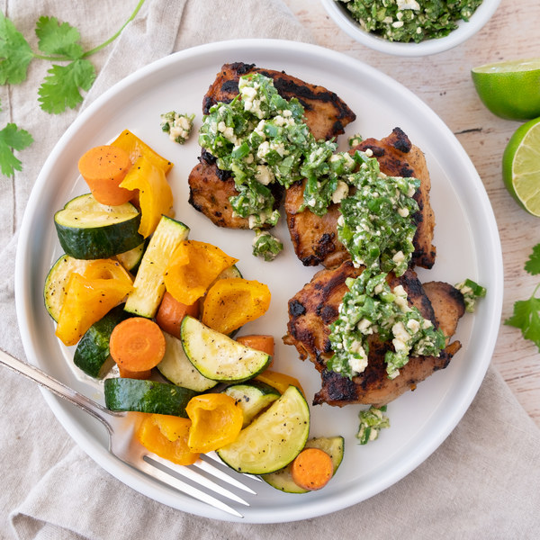

Home
Spicy Peruvian Roast Chicken and Veggies with Cilantro-Feta Salsa

Description
Chicken thighs roasted in a spice paste served with sweet potatoes and
topped with a cilanto-feta salsa with fresh jalapeño.
Makes 4 servings
Ingredients
- 2 medium carrots
- 2 lbs boneless skinless chicken thighs
- 2 small bunches cilantro
- 1 (4 oz) pkg crumbled feta cheese
- 4 cloves garlic
- 2 jalapeño peppers
- 2 limes
- 1 orange bell pepper
- 2 medium zucchini squash
- 1⁄4 tsp black pepper
- 1⁄2 tsp cayenne pepper
- 21⁄2 tsp cumin, ground
- 42⁄3 tbsp olive oil
- 1⁄2 tsp oregano, dried
- 1 tsp salt
Steps
- Preheat oven to 425°F. Position racks in the upper and lower thirds of
the oven.
- Wash and dry the fresh produce.
- 2 medium carrots
- 1 orange bell pepper
- 2 medium zucchini squash
- 2 limes
- 2 jalapeño peppers
- 2 small bunches cilantro
- Peel and slice carrots into ½-inch thick rounds. Seed and large dice
bell pepper. Transfer both to a large bowl.
- 4 tsp olive oil
- 1⁄4 tsp salt
- 1⁄4 tsp black pepper
- Arrange veggies on a large baking sheet pan in a single layer. Place on
the lower rack of the oven and bake, flipping halfway through, until
fork-tender, 20-25 minutes.
- Meanwhile, zest and juice one lime into the bowl used for the veggies.
Set remaining lime aside.
- Peel and mince garlic. Add to the bowl along with oil and spices. Stir
to combine the spice paste.
- 2 cloves garlic
- 2 tsp olive oil
- 11⁄2 tsp cumin
- 1⁄2 tsp oregano
- 1⁄2 tsp cayenne pepper
- 1⁄2 tsp salt
- Preheat a large ovenproof skillet over medium-high heat.
- While the skillet heats up, pat chicken thighs dry with paper towels and
add to the bowl with the spice paste; turn to coat.
- 2 lbs boneless skinless chicken thighs
- Once the skillet is hot, add oil and swirl to coat the bottom. Add
chicken in a single layer, and cook on one side until golden brown and
caramelized, about 5 minutes. Flip and cook for 1 minute more, then remove
from heat (the chicken will not be cooked all the way through).
- Transfer the skillet to the upper rack of the oven and roast until
chicken is cooked through, 12-15 minutes.
- Meanwhile, juice remaining lime into a medium bowl.
- Quarter jalapeño peppers lengthwise; seed and remove ribs with a spoon.
Mince and add to the bowl with the lime juice. (Be careful, with
jalapeños, do not touch your eyes and ensure you wash your hands after
handling or wear gloves while preparing.)
- Shave cilantro leaves off the stems; discard stems and mince the leaves.
Add to the bowl.
- Peel and mince additional garlic. Add to the bowl along with feta, oil,
cumin, and salt. Stir to combine the salsa.
- 2 cloves garlic
- 1 (4 oz) pkg crumbled feta cheese
- 4 tsp olive oil
- 1 tsp cumin
- 1⁄4 tsp salt
- To serve, divide veggies and chicken between plates. Spoon salsa over
chicken and enjoy!